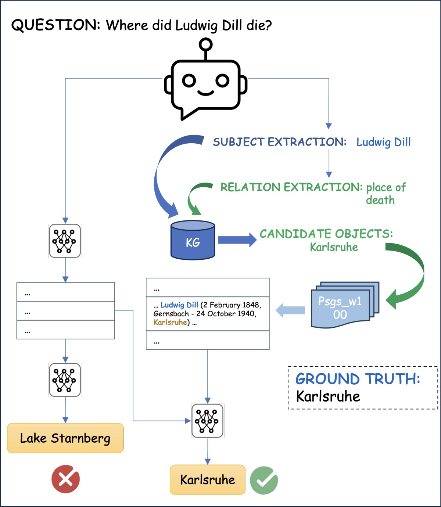

Retrieval-based Question Answering with Passage Expansion Using a Knowledge Graph
Overview
We explore whether a multimodal passage retriever can bolster open-domain QA by combining knowledge-graph entity features with dense text retrieval, compensating for dense neural retrievers' weakness on rare entities and facts.

Approach
We devise a multimodal retriever that combines entity features from a knowledge graph with textual data. A distantly supervised question–relation extraction model enhances retrieval through the KG, injecting structured context that connects questions to passages reachable via entities and relations rather than surface similarity alone.
Results
Across several datasets, the approach improves retrieval precision in some settings and confirms enhanced performance on entity-centric questions, indicating that knowledge-graph context complements dense retrieval for rare entities. Challenges remain for complex, generalized questions.